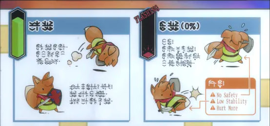

Tunic: A Language Built for Discovery
Tunic might not be a household name, but for those who’ve played it, the game leaves a lasting impression — especially because of its mysterious, completely made-up language.
At first glance, Tunic looks like a charming indie adventure game, starring a little fox in a big world. But players quickly realize that the entire game — from dialogue to item descriptions — is written in a cryptic, unreadable script. No translation, no hints. Just symbols.
And that’s the point.
The creators of Tunic designed this artificial language not to be handed to the player, but to be discovered. As you progress, you collect pages of an in-game instruction manual, styled like something from the 1980s. Bit by bit, symbols begin to connect with meanings, and players start to translate the language themselves, just by paying attention, making notes, and experimenting.
Structurally, the language in Tunic is a substitution cipher, meaning each symbol stands in for a real English letter or sound. But it’s not just a basic A = star kind of code — the symbols are carefully designed to avoid obvious clues, blending into the retro aesthetic of the game. There’s also clever use of partial words, fragmented phrases, and visual cues that make deciphering the language feel like solving a riddle, not cracking a codebook.
Unlike many fictional languages that are built to be spoken or learned like a second language, the one in Tunic is more like a linguistic puzzle. It’s there to create a sense of mystery, to reward curiosity, and to make players feel like true explorers — not just of the game world, but of the game’s rules themselves.
It’s one of the most creative uses of an artificial language in modern gaming, not because it tells a story — but because you uncover the story by learning the language.